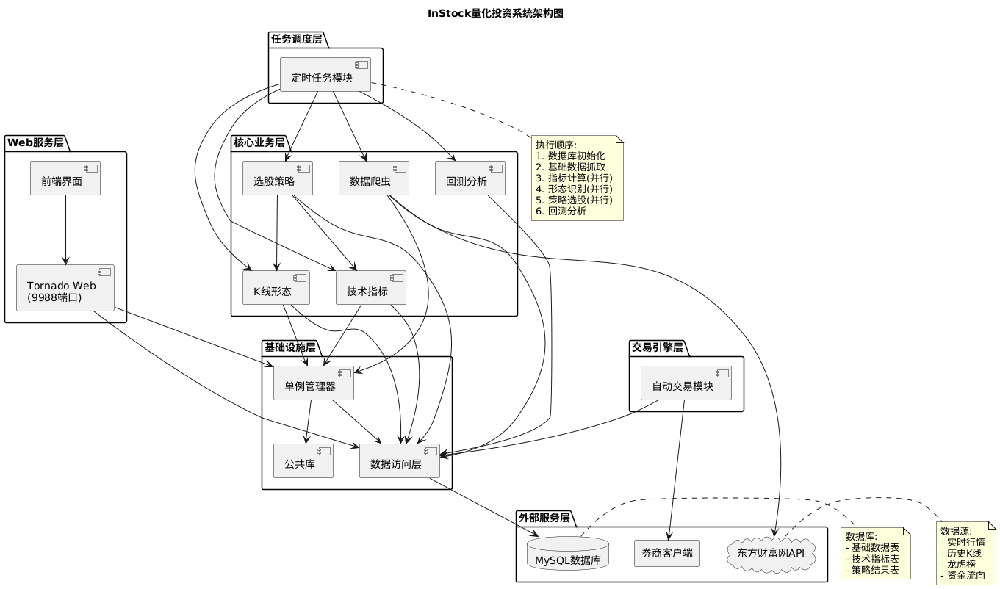
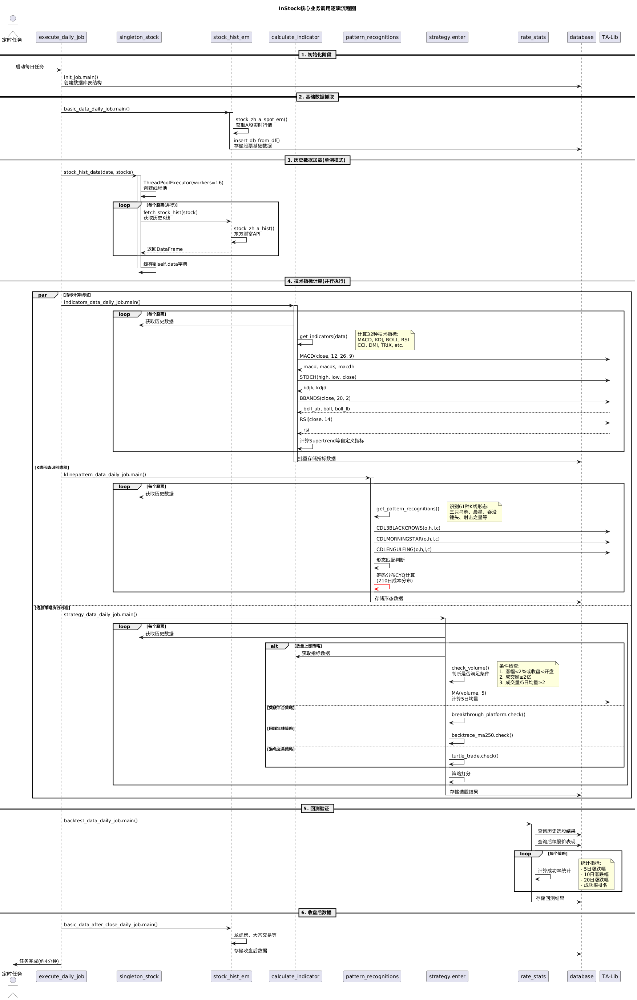
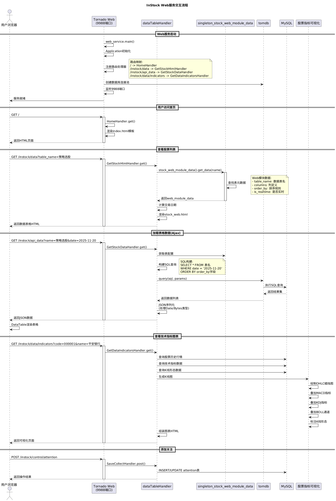
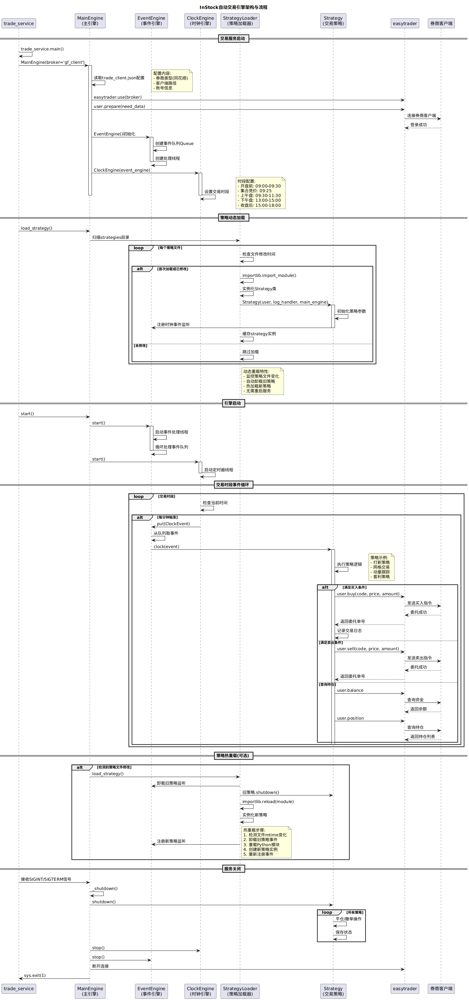
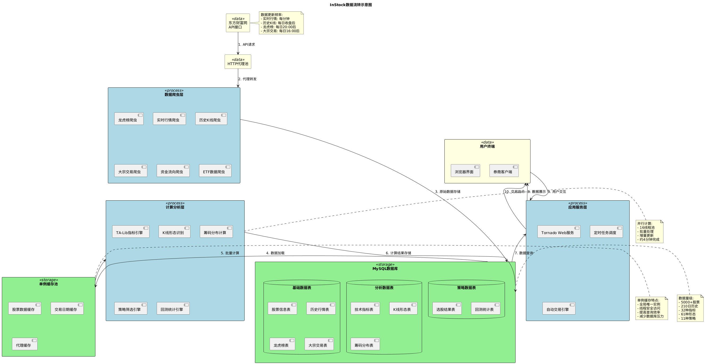
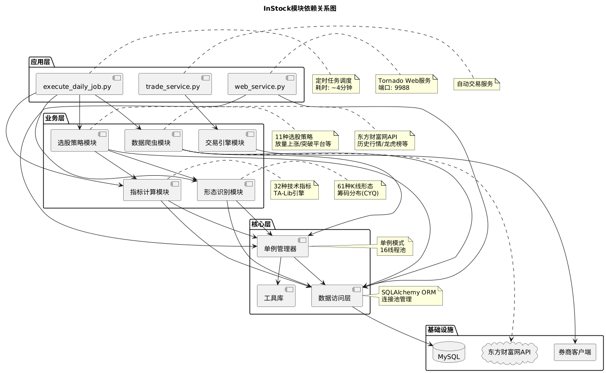

📊 InStock 系统架构图导航
量化投资系统完整架构可视化文档
7
架构图
6
核心层次
30+
核心模块
5000+
股票数据
1️⃣ 系统架构图
system_architecture.png
完整的系统架构分层视图，展示InStock的六大层次：外部服务层、Web服务层、任务调度层、核心业务层、交易引擎层、基础设施层。清晰呈现各层模块及其交互关系。

{kind=link}
2️⃣ 核心业务调用逻辑
core_logic_flow.png
展示每日任务执行的完整流程，从数据库初始化、数据抓取、历史数据加载(16线程并行)，到技术指标计算(32种)、K线形态识别(61种)、策略选股(11种)，最后进行回测验证。

{kind=link}
3️⃣ Web服务交互流程
web_interaction_flow.png
Tornado Web服务(9988端口)的完整交互流程，包括服务启动、路由处理、数据表格展示、Ajax异步加载、技术指标图表可视化(Bokeh)、用户操作响应等。

{kind=link}
4️⃣ 自动交易引擎架构
trade_engine_flow.png
完整的自动交易引擎工作流程，展示MainEngine事件驱动架构、策略动态加载机制、交易时段循环、策略热重载、券商客户端交互、服务关闭流程等核心环节。

{kind=link}
5️⃣ 数据流转示意图
data_flow.png
系统内数据流转的完整路径：从东方财富网API经HTTP代理到数据爬虫，存入MySQL基础数据表，通过单例缓存池加速访问，经计算分析层(TA-Lib)处理，最终服务于Web和交易引擎。

{kind=link}
6️⃣ 模块依赖关系图
module_dependency.png
详细的模块依赖关系，分为应用层、业务层、核心层、基础设施四层。展示web_service、数据爬虫、指标计算、形态识别、选股策略、交易引擎等30+模块的依赖关系。

{kind=link}
7️⃣ 技术栈总览
tech_stack.png
完整的技术栈和工具链展示，包括Python核心生态(pandas/numpy/TA-Lib/bokeh)、Web服务(Tornado/Bootstrap)、数据库(MySQL/SQLAlchemy)、数据采集(requests)、自动交易(easytrader)、辅助工具(Docker/Supervisor)等。